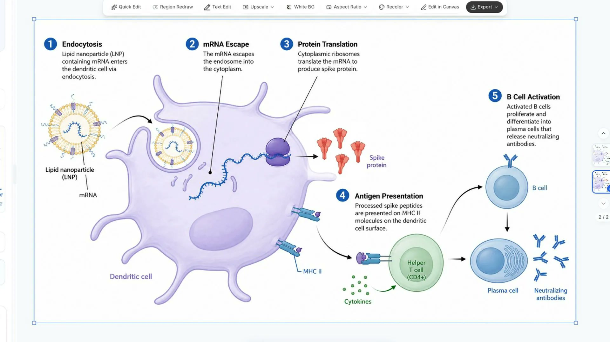

공식 브랜드 자료
아이디어, 데이터, 연구 과정을 명확한 시각 자료로.
SciFig는 Illustration, DataChart, FlowChart를 하나의 과학 커뮤니케이션 플랫폼으로 제공합니다. 작업 흐름을 살펴보고 예제를 따라 하며 공개 리소스를 활용하세요.
세 가지 작업 공간
공유 전에 과학적 의미, 라벨, 출처를 검토하세요. 편집 및 내보내기 옵션은 작업 공간과 작업 흐름에 따라 다르며 튜토리얼에서 구체적인 예를 확인할 수 있습니다.
공개 리소스
포스터 및 프레젠테이션 템플릿
인쇄 크기나 발표 목적에 따라 PPTX 파일 154개를 살펴보세요. 레이아웃을 미리 보고 사용 전에 템플릿 라이선스를 확인하세요.
과학 그림 제작 Skill
에이전트에서 그림 구조와 프롬프트를 준비합니다. 생성에는 에이전트의 이미지 도구나 설정된 이미지 API를 사용하며 이 Skill은 SciFig API를 호출하지 않습니다.
공식 미디어 라이브러리
완성 영상 35개, 언어별 자료 묶음, 자막, 제품 미리보기를 제공합니다. 파일은 공식 CDN에 있으며 이 저장소에서 목록과 사용 안내를 확인할 수 있습니다.
SciFig 개발자
Alex Carter는 SciFig의 설립자이자 독립 개발자입니다. 공개 작업에는 플랫폼, 연구 포스터와 발표 템플릿, 실용 가이드, 이 리소스 모음이 포함됩니다. 편집 기준과 연락처는 소개 페이지에서 확인하세요.
소개 및 편집 기준리소스 업데이트
2026년 10월: 세 작업 공간의 공개 소개를 갱신하고 영상 35개와 8개 언어 자막을 정리했습니다. 학습용 합성 예제 세 개와 공개 리소스 링크를 추가했습니다.
라이선스 및 사용
SciFig는 상용 플랫폼입니다. 이 저장소는 공개 리소스 모음이며 제품 소스 코드는 아닙니다. 자료, 템플릿, MIT 라이선스 Skill에는 각각 별도 약관이 적용되며 다른 콘텐츠에 자동으로 확대 적용되지 않습니다.
미디어 자료 이용 조건